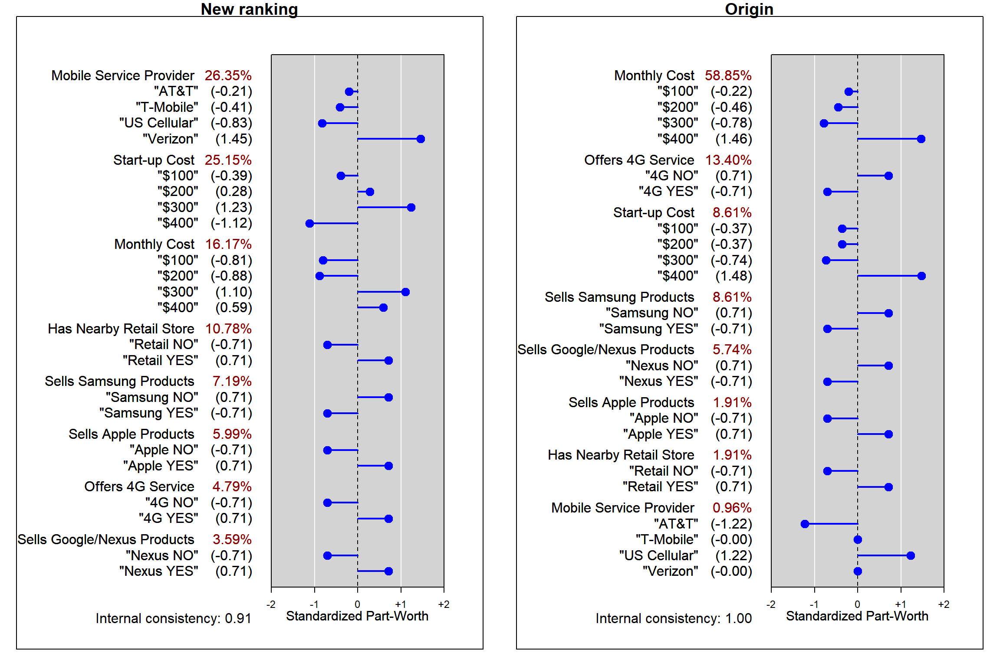
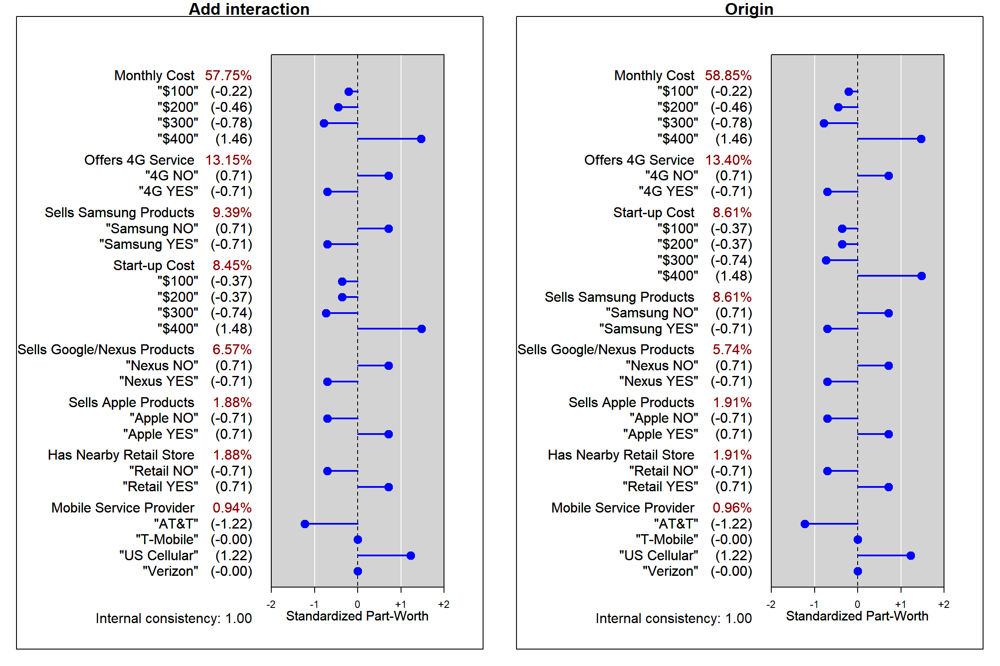

Sec 2 Self-learning
2.1 Enter new ranking
- Enter your own rankings for the product profiles and generate conjoint measures of attribute importance and level part-worths.
- 隨機分配排名
# get data
df <- conjoint.data.frame
set.seed(0920)
df$ranking <- sample(1:16)
# head(df,3); head(conjoint.data.frame,3)
# fit model
ft <- lm(ranking~., data=df)# get `conjoint.results`
new.conjoint.results <- get_result(ft)
# report
show_report(new.conjoint.results)##
##
## brand Levels: "AT&T" "T-Mobile" "US Cellular" "Verizon"
## Part-Worths: -1.00 -2.00 -4.00 7.00
## Standardized Part-Worths: -0.21 -0.41 -0.83 1.45
## Attribute Importance: 26.35
##
## startup Levels: "$100" "$200" "$300" "$400"
## Part-Worths: -1.75 1.25 5.50 -5.00
## Standardized Part-Worths: -0.39 0.28 1.23 -1.12
## Attribute Importance: 25.15
##
## monthly Levels: "$100" "$200" "$300" "$400"
## Part-Worths: -2.75 -3.00 3.75 2.00
## Standardized Part-Worths: -0.81 -0.88 1.10 0.59
## Attribute Importance: 16.17
##
## retail Levels: "Retail NO" "Retail YES"
## Part-Worths: -2.25 2.25
## Standardized Part-Worths: -0.71 0.71
## Attribute Importance: 10.78
##
## samsung Levels: "Samsung NO" "Samsung YES"
## Part-Worths: 1.50 -1.50
## Standardized Part-Worths: 0.71 -0.71
## Attribute Importance: 7.19
##
## apple Levels: "Apple NO" "Apple YES"
## Part-Worths: -1.25 1.25
## Standardized Part-Worths: -0.71 0.71
## Attribute Importance: 5.99
##
## service Levels: "4G NO" "4G YES"
## Part-Worths: -1.00 1.00
## Standardized Part-Worths: -0.71 0.71
## Attribute Importance: 4.79
##
## google Levels: "Nexus NO" "Nexus YES"
## Part-Worths: -0.75 0.75
## Standardized Part-Worths: -0.71 0.71
## Attribute Importance: 3.59# plot
par(mfrow = c(1, 2), mar=c(1,1,1,1))
spine.chart(new.conjoint.results)
title('New ranking')
spine.chart(conjoint.results)
title('Origin')
Conclusion
隨機生成ranking後，最重要的變為電信商，但是重要性僅26.35%
2.2 Add interaction
- Beyond a linear main-effects model. See if you can build a model with interaction effects for service provider attributes.
- 加入samsung和google的交互作用項
| brand | startup | monthly | service | retail | apple | samsung | ranking | |
|---|---|---|---|---|---|---|---|---|
| “AT&T” | “$100” | “$100” | “4G NO” | “Retail NO” | “Apple NO” | “Samsung NO” | “Nexus NO” | 11 |
| “Verizon” | “$300” | “$100” | “4G NO” | “Retail YES” | “Apple YES” | “Samsung YES” | “Nexus NO” | 12 |
| “US Cellular” | “$400” | “$200” | “4G NO” | “Retail NO” | “Apple NO” | “Samsung YES” | “Nexus NO” | 9 |
# fit model
ft_interaction <- lm(ranking~. + samsung*google, data=conjoint.data.frame)
# ft_interaction
summary(ft_interaction)##
## Call:
## lm(formula = ranking ~ . + samsung * google, data = conjoint.data.frame)
##
## Residuals:
## ALL 16 residuals are 0: no residual degrees of freedom!
##
## Coefficients:
## Estimate Std. Error t value Pr(>|t|)
## (Intercept) 1.100e+01 NaN NaN NaN
## brand"T-Mobile" -2.500e-01 NaN NaN NaN
## brand"US Cellular" -6.459e-16 NaN NaN NaN
## brand"Verizon" 2.500e-01 NaN NaN NaN
## startup"$200" -7.500e-01 NaN NaN NaN
## startup"$300" -7.500e-01 NaN NaN NaN
## startup"$400" -1.500e+00 NaN NaN NaN
## monthly"$200" -3.000e+00 NaN NaN NaN
## monthly"$300" -6.250e+00 NaN NaN NaN
## monthly"$400" -1.075e+01 NaN NaN NaN
## service"4G YES" 3.500e+00 NaN NaN NaN
## retail"Retail YES" -5.000e-01 NaN NaN NaN
## apple"Apple YES" -5.000e-01 NaN NaN NaN
## samsung"Samsung YES" 2.500e+00 NaN NaN NaN
## google"Nexus YES" 1.750e+00 NaN NaN NaN
## samsung"Samsung YES":google"Nexus YES" -5.000e-01 NaN NaN NaN
##
## Residual standard error: NaN on 0 degrees of freedom
## Multiple R-squared: 1, Adjusted R-squared: NaN
## F-statistic: NaN on 15 and 0 DF, p-value: NA# get `conjoint.results`
interaction.conjoint.results <- get_result(ft_interaction)
# report
show_report(interaction.conjoint.results)##
##
## monthly Levels: "$100" "$200" "$300" "$400"
## Part-Worths: -3.00 -6.25 -10.75 20.00
## Standardized Part-Worths: -0.22 -0.46 -0.78 1.46
## Attribute Importance: 57.75
##
## service Levels: "4G NO" "4G YES"
## Part-Worths: 3.50 -3.50
## Standardized Part-Worths: 0.71 -0.71
## Attribute Importance: 13.15
##
## samsung Levels: "Samsung NO" "Samsung YES"
## Part-Worths: 2.50 -2.50
## Standardized Part-Worths: 0.71 -0.71
## Attribute Importance: 9.39
##
## startup Levels: "$100" "$200" "$300" "$400"
## Part-Worths: -0.75 -0.75 -1.50 3.00
## Standardized Part-Worths: -0.37 -0.37 -0.74 1.48
## Attribute Importance: 8.45
##
## google Levels: "Nexus NO" "Nexus YES"
## Part-Worths: 1.75 -1.75
## Standardized Part-Worths: 0.71 -0.71
## Attribute Importance: 6.57
##
## apple Levels: "Apple NO" "Apple YES"
## Part-Worths: -0.50 0.50
## Standardized Part-Worths: -0.71 0.71
## Attribute Importance: 1.88
##
## retail Levels: "Retail NO" "Retail YES"
## Part-Worths: -0.50 0.50
## Standardized Part-Worths: -0.71 0.71
## Attribute Importance: 1.88
##
## brand Levels: "AT&T" "T-Mobile" "US Cellular" "Verizon"
## Part-Worths: -0.25 -0.00 0.25 -0.00
## Standardized Part-Worths: -1.22 -0.00 1.22 -0.00
## Attribute Importance: 0.94# plot
par(mfrow = c(1, 2), mar=c(1,1,1,1))
spine.chart(interaction.conjoint.results)
title('Add interaction')
spine.chart(conjoint.results)
title('Origin')
Conclusion
- 加入samsung和google的交互作用項
- samsung的係數: \(2.25\to2.5\)
- google的係數: \(1.5\to1.75\)
- samsung*google的係數為: \(-0.5\)，表示當samsung和google都有代理時會降低喜好的排名